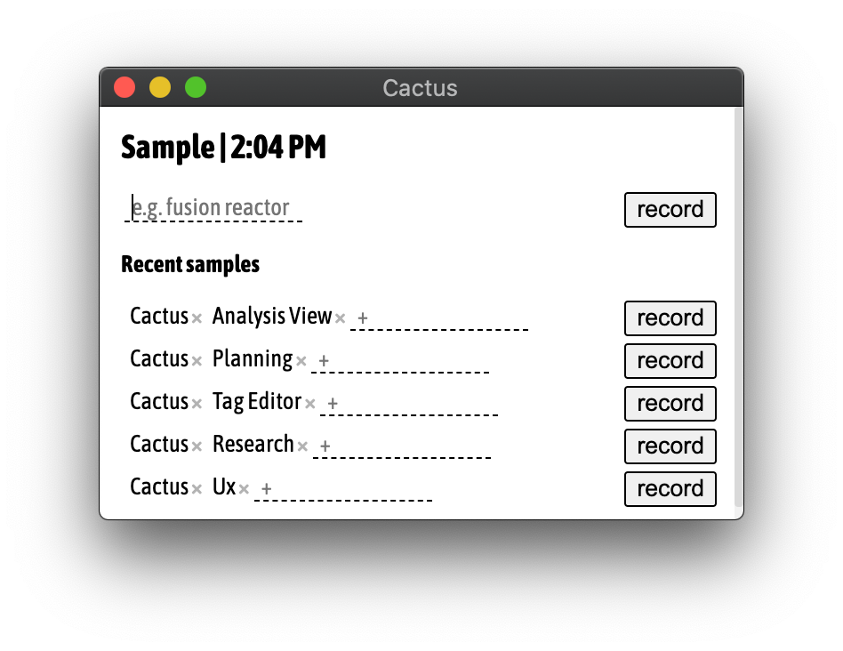

Randomly sample yourself to understand how you spend your time.
As you respond to these samples, Cactus builds up a view of how you spend your time:

Give it a try:
Github ReleasesThoughts/Questions? shoot me an email at davidrusu.me@gmail.com